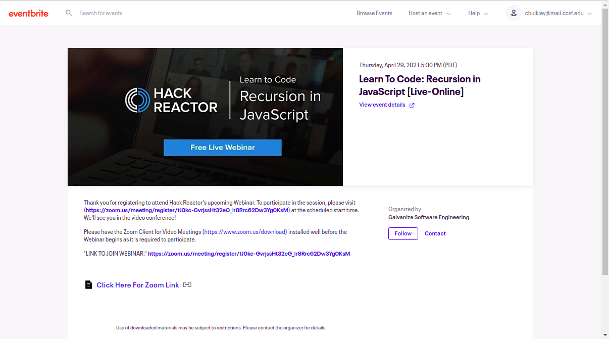

I attended a remote meeting focused on the power of recursive programming in all languages, but specifically within JavaScript. I learned about the meeting from a posting on MeetUp.com. It was hosted by Learn to Code, an organization dedicated to introducing individuals with minimal background experience to the world of Computer Science and Software Development. The meeting was administered in affiliation with Galvanize, a Company that provides training, bootcamps and co-working space in San Francisco.
A screenshot of the event posting is shown below:
During the meeting, we learned about the advantages which recursive algorithms offer over other approaches to methodical problem solving, notably standard / linear iteration. We learned that recursive processes allow for all indexing and identification within sub-instances to be processed within their parent instances, thereby removing the exponential increase in demand for computing resources when all instances are treated equally and memory is maintained from begining to end of the entire process (as in standard iteration).
We also learned / rehearsed several techniques which often come in handy when working with recursive systems, including:
By the end of this meeting, I was inspired to build a minimum working example of something truly recursive in JavaScript. While I still have a ways to go to be able to fully explain the value offered by recursion, I can confidently state that
“A recursive function is one that calls itself.”
Armed with this elegant deffinition, I developed the code found within the file of this site named "recursion.js", which creates the nested, size/color-graded list shown below.